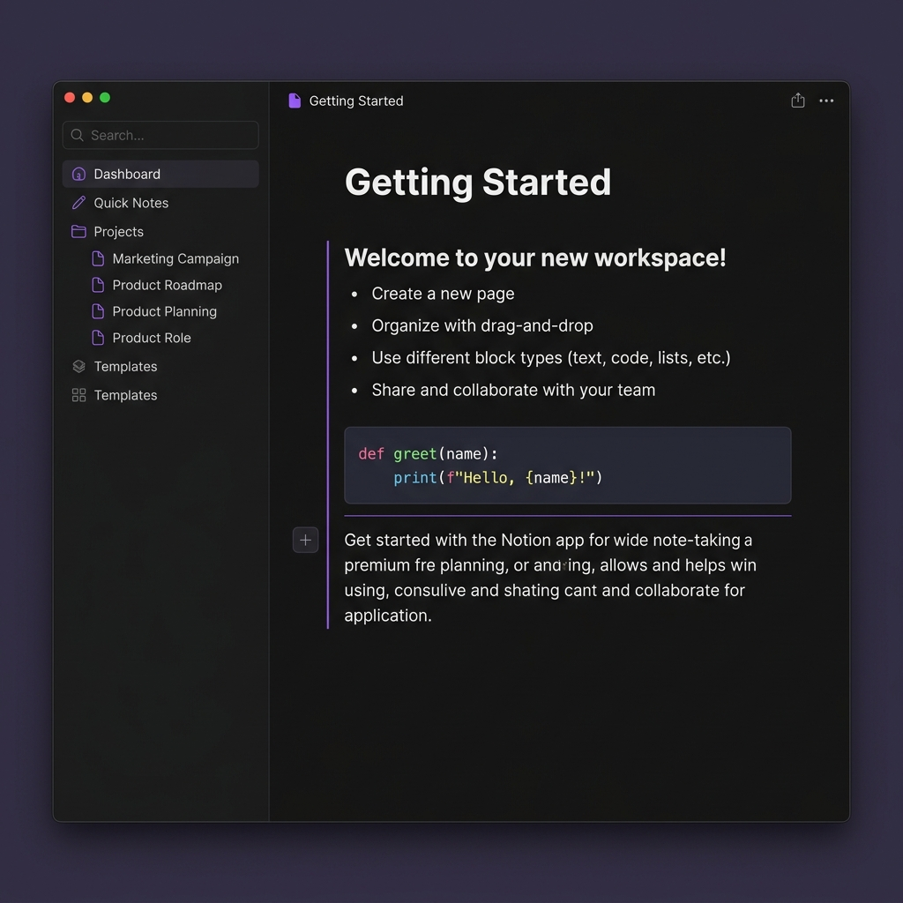
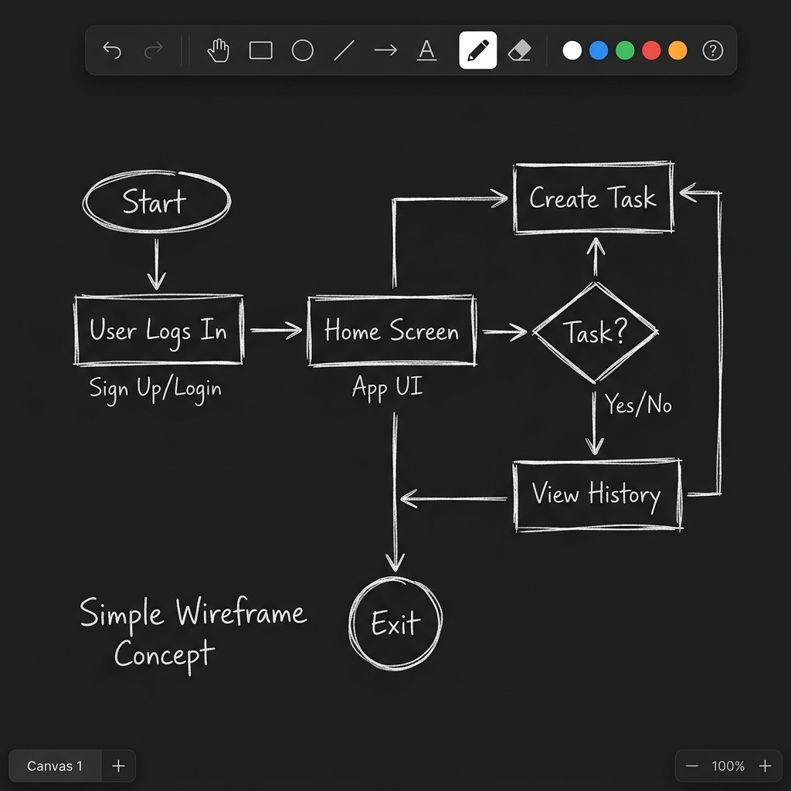
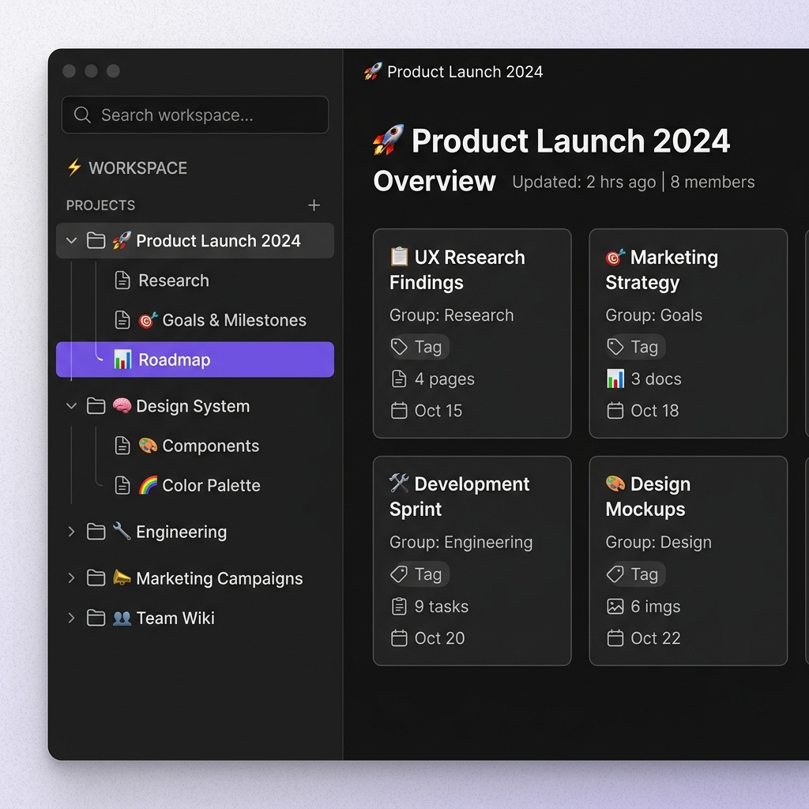

Think. Write. Sketch.
All in One Beautiful Workspace
Notexcali combines the structured power of Notion-style block editing with the creative freedom of Excalidraw-style hand-drawn illustrations — all in a single, lightning-fast workspace.
Get Started for Free
Powerful Tools,
Beautifully Combined
Stop switching between five different apps. Notexcali brings block editing, hand-drawn sketching, cloud sync, and PDF export together into one cohesive, premium workspace.
Slash Commands, Infinite Blocks
Type / to insert headings, bullet lists, code snippets with syntax highlighting, or drawing canvases. A familiar, powerful command-driven editor.

Sketch Wireframes & Diagrams
Deeply integrated Rough.js-powered sketching. Create wireframes, flowcharts, or doodles directly inside your notes with a beautiful hand-drawn aesthetic.

Sign In Once, Access Everywhere
Securely sign in with Google. Your notes are saved in the cloud with Firebase and sync across all your devices instantly.

Nested Pages & Workspaces
Organize your ideas with projects, nested pages, and a clean sidebar. A distraction-free workspace that scales with your thinking.
One-Click Professional PDFs
Generate beautiful, print-ready PDFs that perfectly preserve your layout, formatting, and hand-drawn illustrations.
Install as a Native App
Install Notexcali on your phone or desktop for a premium native-app experience. Works offline, feels fast, and looks stunning.
Get Started in Seconds
No setup, no friction. Just sign in and start creating.
Sign in with Google
One click. Lightning fast. Your account is ready in under 2 seconds.
Create Pages & Projects
Organize your ideas into pages and projects with a clean, intuitive workspace.
Write, Sketch, Export
Bring ideas to life with blocks, canvases, and one-click PDF export.
Built By a Developer,
For Developers
Notexcali was born from a simple frustration — existing tools were either too complex or too limited. I wanted a workspace where I could write structured notes and sketch diagrams in the same place, without switching apps. So I built one.